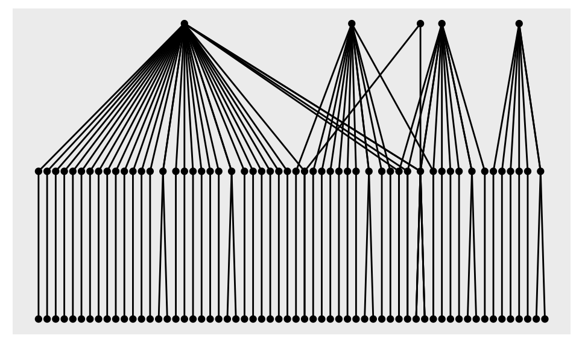
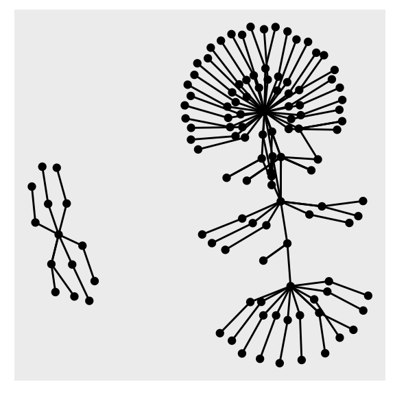
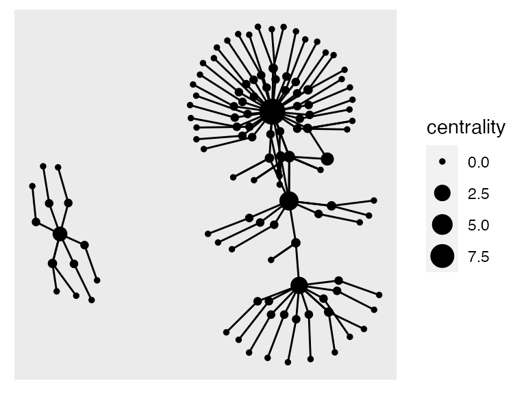
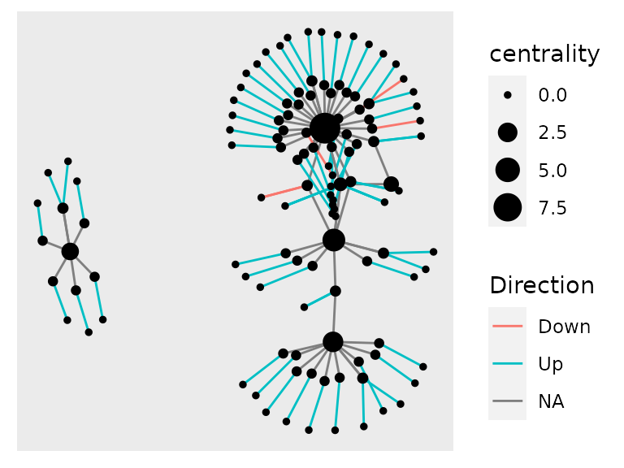
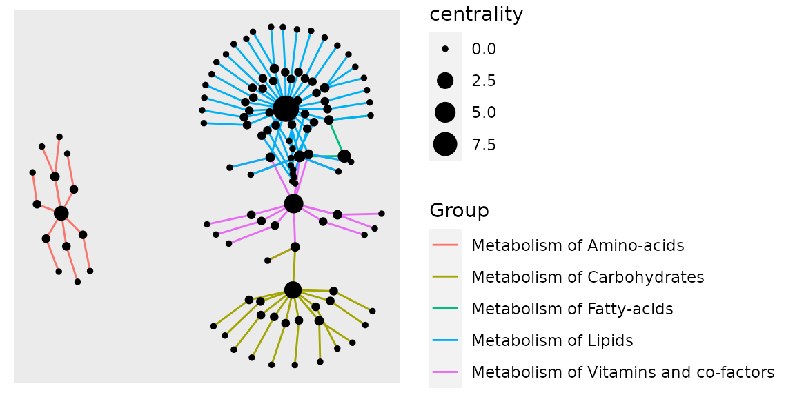
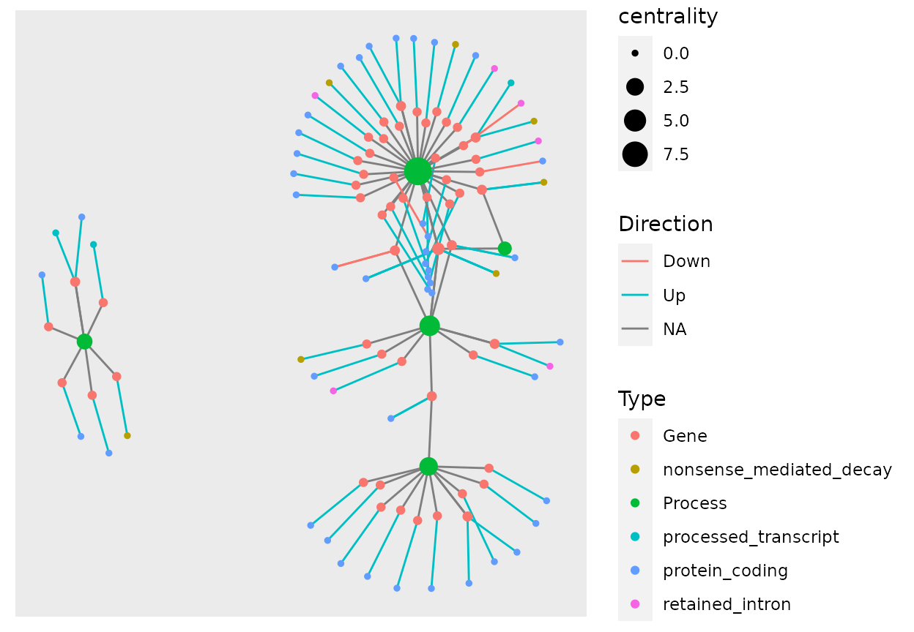
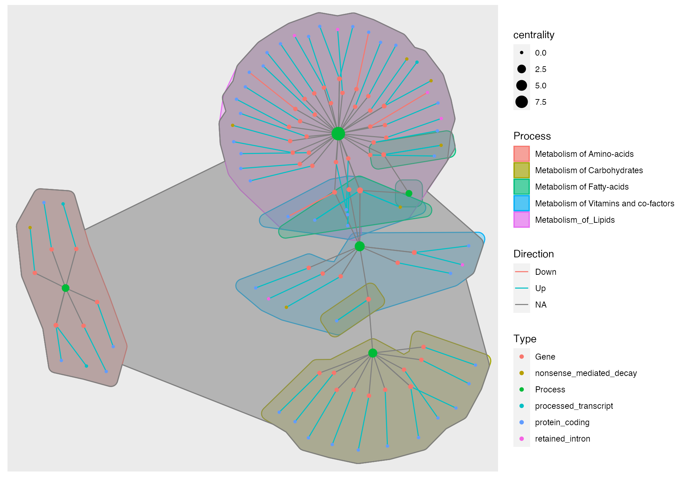
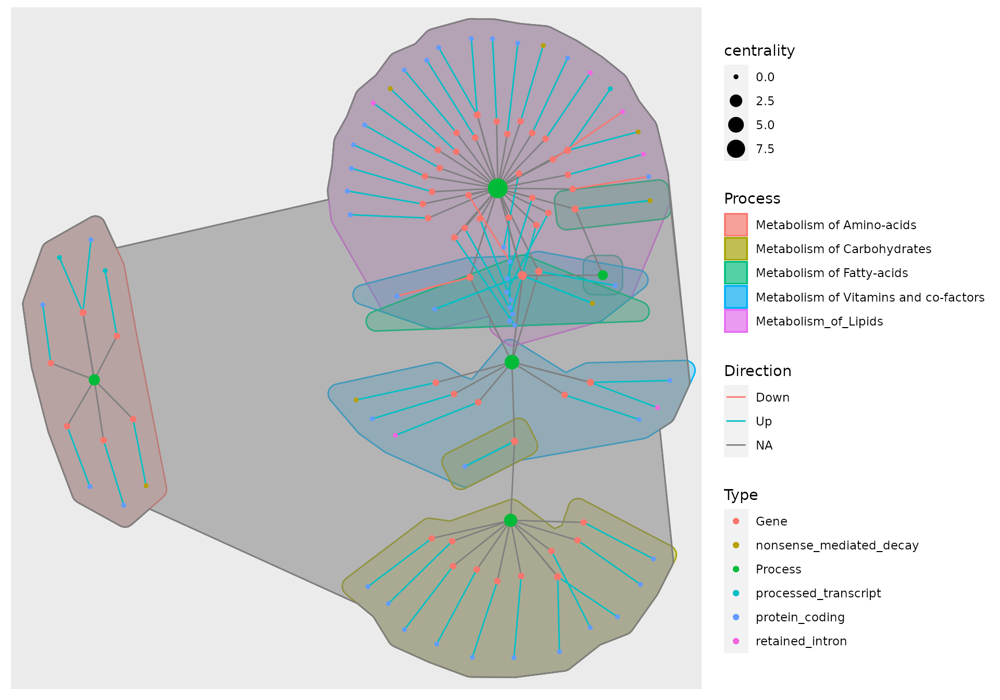

vignettes/txGeneNetwork.Rmd
txGeneNetwork.RmdAbstract
This workflow is a comprehensive guideline of how to construct Pathway-Gene-Transcript network from transcript expression data using the amazing packs tidygraph and ggraph.
R version: R version 4.0.2 (2020-06-22)
Bioconductor version: 3.11
Package: 0.0.0.9000
Your input data must be organized as a .csv with From and To Columns, for this specific graph your from-to order would go Process -> Gene and in another line Gene -> Transcript
| From | To |
|---|---|
| Process_1 | Gene_1 |
| Gene_1 | Transcript_1 |
| Gene_1 | Transcript_2 |
Other metadata columns which will correspond to the edges info can be added and will also be imported, for this type of network we add a Process column, or to which metabolic process that edge belongs to and a Direction column, to show if that transcript is up or down regulated in our example data.
| From | To | Process | Direction |
|---|---|---|---|
| Process_1 | Gene_1 | Process_1 | NA |
| Gene_1 | Transcript_1 | Process_1 | Up |
| Gene_1 | Transcript_2 | Process_1 | Down |
tidygraph uses a two tibble format, one for nodes and one for edges and displays it as a tbl_graph object, using a tidy manner to display both tibbles together
example_dataset_path <- system.file("extdata", "example_dataset.csv", package = "txGeneNetwork") example_dataset <- read_csv(example_dataset_path)
The tbl_graph() command allows you to directly create a tbl_graph object using our .csv table
example_tbl_graph <- as_tbl_graph(example_dataset) example_tbl_graph
## # A tbl_graph: 119 nodes and 135 edges
## #
## # A directed acyclic multigraph with 2 components
## #
## # Node Data: 119 x 1 (active)
## name
## <chr>
## 1 Metabolism of Lipids
## 2 ACACA
## 3 ACACB
## 4 ACSL5
## 5 AGPAT3
## 6 ANKRD1
## # … with 113 more rows
## #
## # Edge Data: 135 x 4
## from to Direction Group
## <int> <int> <chr> <chr>
## 1 1 2 <NA> Metabolism of Lipids
## 2 1 3 <NA> Metabolism of Lipids
## 3 1 4 <NA> Metabolism of Lipids
## # … with 132 more rowsNow that we have the tbl_graph object we can start plotting the data. GGraph uses a syntax very similar to ggplot2 and most of the addons used in ggplot2 can also be used in ggraph, like theme_*() from ggthemes and geom_*_repel() from ggrepel. To start we will construct the basic network using the example data and after we add extra information for nodes and for edges. We will use geom_node_point() and geom_edge_link() for the basic network.
example_tbl_graph %>% ggraph() + geom_node_point() + geom_edge_link()

We got a message, saying that ggraph used sugiyama as default layout, that can be changed passing an argument to the ggraph() function call.
example_tbl_graph %>% ggraph(layout = "kk") + geom_node_point() + geom_edge_link()

Now we have a network more similar to the final product. To modify our tbl_graph object and add other variables you can use usual dplyr syntax together with the activate() function. The activate() will select which of the tibbles you are modifying the nodes or the edges tibble. Here we add a centrality measure1 to the network and size it accordingly using an aes() call inside geom_node_point().
example_tbl_graph %>% mutate(centrality = centrality_power()) %>% ggraph(layout = "kk") + geom_node_point(aes(size = centrality)) + geom_edge_link()

We can also color de edges according to the process they belong to, or to the direction of the transcript expression, using a similar syntax, but now adding an aes() call inside geom_edge_link().
example_tbl_graph %>% mutate(centrality = centrality_power()) %>% ggraph(layout = "kk") + geom_edge_link(aes(col = Direction)) + geom_node_point(aes(size = centrality))

example_tbl_graph %>% mutate(centrality = centrality_power()) %>% ggraph(layout = "kk") + geom_edge_link(aes(col = Group)) + geom_node_point(aes(size = centrality))

As there are genes which belong to more than one biological process, this is not an adequate process visualization, the best way would be plotting it as individual hulls, but we will get to that down the workflow.
For now in our example table we only added aesthetics to the edges, now we will add the transcript_type and the hull aesthetic. First you can extract the nodes table to then modify it using
## # A tibble: 119 x 1
## name
## <chr>
## 1 Metabolism of Lipids
## 2 ACACA
## 3 ACACB
## 4 ACSL5
## 5 AGPAT3
## 6 ANKRD1
## 7 ASAH1
## 8 CYP2E1
## 9 CYP4F3
## 10 ESYT2
## # … with 109 more rowsSaving this on an object allows you to save and modify at will your nodes table. Here we load the modified table version
modified_nodes_path <- system.file("extdata", "modified_nodes.csv", package = "txGeneNetwork") modified_nodes <- read_csv(modified_nodes_path)
We now add the transcript modified information in our tbl_graph object and plot it using the aes(col)
example_tbl_graph %>% activate(nodes) %>% mutate(Type = modified_nodes$Type) %>% mutate(centrality = centrality_power()) %>% ggraph(layout = "kk") + geom_edge_link(aes(col = Direction)) + geom_node_point(aes(size = centrality, color = Type))

The geom_mark_hull(), the function to add the hull colors as process, does not work well with the tbl_graph object due to not being able to add multiple information for the same node in the same color. So the best way to color hulls is to add extra columns representing these sobrepositions and do one geom_mark_hull() call for each.
example_tbl_graph %>% activate(nodes) %>% mutate(Type = modified_nodes$Type, Process = modified_nodes$Process_1, Process_2 = modified_nodes$Process_2, Process_3 = modified_nodes$Process_3) %>% mutate(centrality = centrality_power()) %>% ggraph(layout = "kk") + geom_mark_hull(aes(x = x, y = y, fill = Process, color = Process)) + geom_mark_hull(aes(x = x, y = y, fill = Process_2, color = Process_2)) + geom_mark_hull(aes(x = x, y = y, fill = Process_3, color = Process_3)) + geom_edge_link(aes(col = Direction)) + new_scale("color") + geom_node_point(aes(size = centrality, color = Type))

Unfortunately, there is no way to plot this without the NA values due to the tbl_grpah type and how the geom_mark_hull works, so the NA hulls have to be removed a posteriori.
Now some final touches like legend size and title
example_tbl_graph %>% activate(nodes) %>% mutate(Type = modified_nodes$Type, Process = modified_nodes$Process_1, Process_2 = modified_nodes$Process_2, Process_3 = modified_nodes$Process_3) %>% mutate(centrality = centrality_power()) %>% ggraph(layout = "kk") + geom_mark_hull(aes(x = x, y = y, fill = Process, color = Process)) + geom_mark_hull(aes(x = x, y = y, fill = Process_2, color = Process_2)) + geom_mark_hull(aes(x = x, y = y, fill = Process_3, color = Process_3)) + geom_edge_link(aes(col = Direction)) + new_scale("color") + geom_node_point(aes(size = centrality, color = Type))

There, now you have the final network and you only need to save it as .pdf or .csv and remove the NA layer of the hull.
## R version 4.0.2 (2020-06-22)
## Platform: x86_64-apple-darwin17.0 (64-bit)
## Running under: macOS Catalina 10.15.6
##
## Matrix products: default
## BLAS: /Library/Frameworks/R.framework/Versions/4.0/Resources/lib/libRblas.dylib
## LAPACK: /Library/Frameworks/R.framework/Versions/4.0/Resources/lib/libRlapack.dylib
##
## locale:
## [1] en_US.UTF-8/en_US.UTF-8/en_US.UTF-8/C/en_US.UTF-8/en_US.UTF-8
##
## attached base packages:
## [1] stats graphics grDevices utils datasets methods base
##
## other attached packages:
## [1] txGeneNetwork_0.0.0.9000 concaveman_1.1.0 ggnewscale_0.4.3
## [4] tidyr_1.1.2 readr_1.3.1 ggforce_0.3.2
## [7] tidygraph_1.2.0 ggraph_2.0.3 ggplot2_3.3.2
## [10] knitr_1.29 BiocStyle_2.16.0
##
## loaded via a namespace (and not attached):
## [1] tidyselect_1.1.0 xfun_0.16 purrr_0.3.4
## [4] graphlayouts_0.7.0 lattice_0.20-41 V8_3.2.0
## [7] colorspace_1.4-1 vctrs_0.3.4 generics_0.0.2
## [10] htmltools_0.5.0 viridisLite_0.3.0 yaml_2.2.1
## [13] utf8_1.1.4 rlang_0.4.7 pkgdown_1.6.0
## [16] pillar_1.4.6 glue_1.4.2 withr_2.2.0
## [19] tweenr_1.0.1 lifecycle_0.2.0 stringr_1.4.0
## [22] munsell_0.5.0 gtable_0.3.0 ragg_0.3.1
## [25] memoise_1.1.0 evaluate_0.14 labeling_0.3
## [28] curl_4.3 fansi_0.4.1 Rcpp_1.0.5
## [31] scales_1.1.1 backports_1.1.9 BiocManager_1.30.10
## [34] desc_1.2.0 cpp11_0.2.1 jsonlite_1.7.1
## [37] farver_2.0.3 systemfonts_0.3.0 fs_1.5.0
## [40] gridExtra_2.3 hms_0.5.3 digest_0.6.25
## [43] stringi_1.4.6 bookdown_0.20 dplyr_1.0.2
## [46] ggrepel_0.8.2 polyclip_1.10-0 grid_4.0.2
## [49] rprojroot_1.3-2 cli_2.0.2 tools_4.0.2
## [52] magrittr_1.5 tibble_3.0.3 crayon_1.3.4
## [55] pkgconfig_2.0.3 Matrix_1.2-18 ellipsis_0.3.1
## [58] MASS_7.3-51.6 assertthat_0.2.1 rmarkdown_2.3
## [61] viridis_0.5.1 R6_2.4.1 igraph_1.2.5
## [64] compiler_4.0.2# sessioninfo::session_info() # xfun::session_info()
add a reference about network statistics↩︎